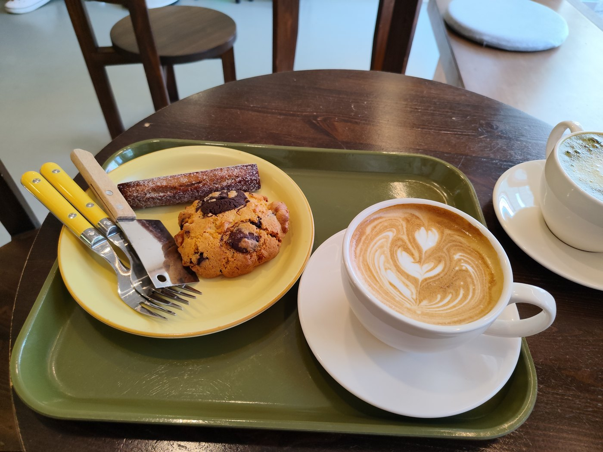
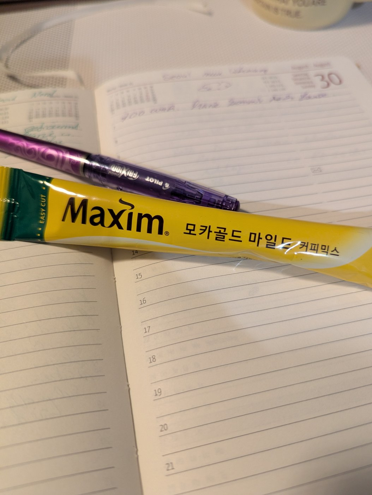
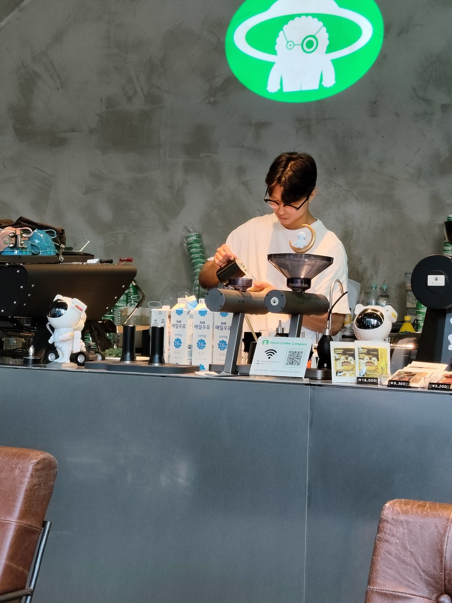
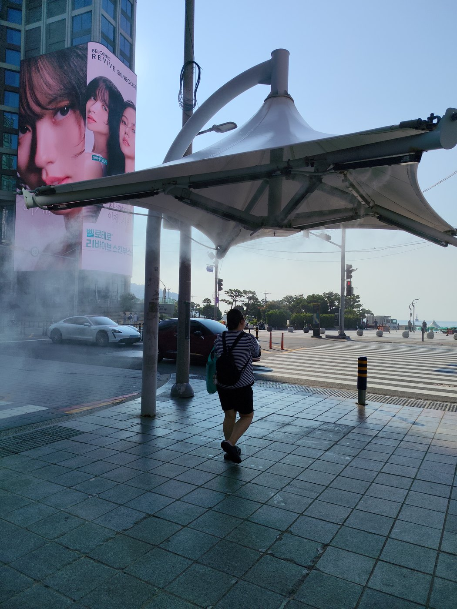
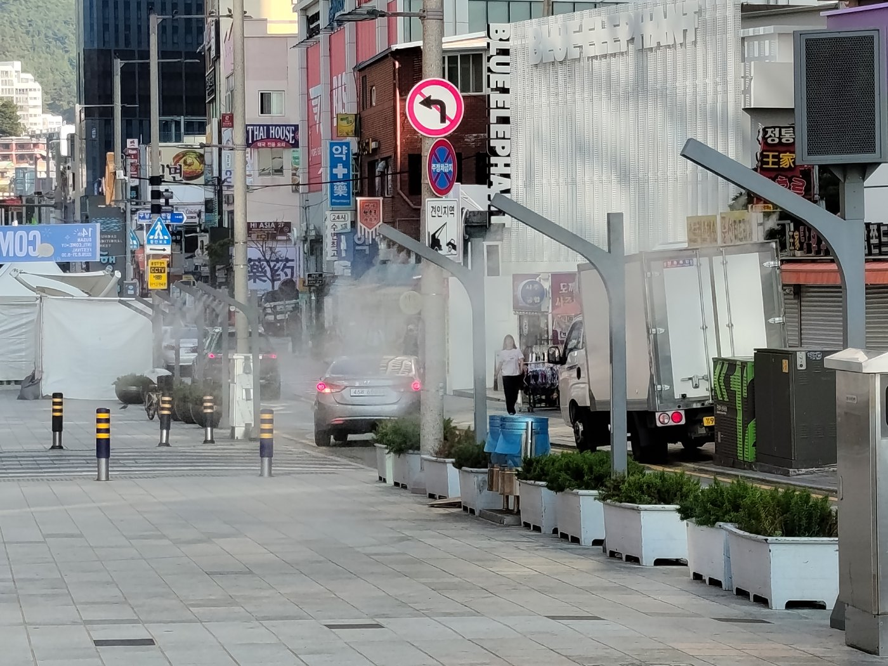
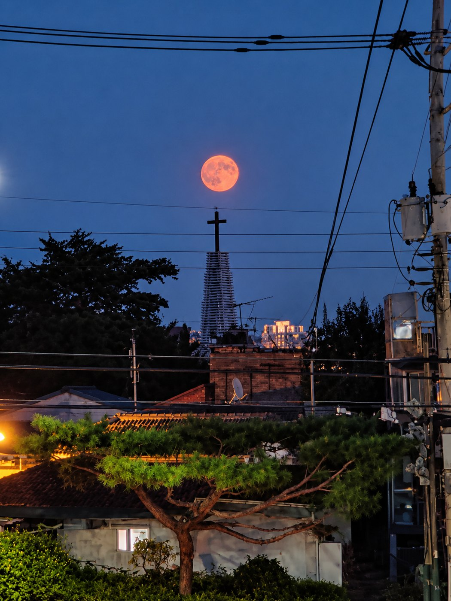
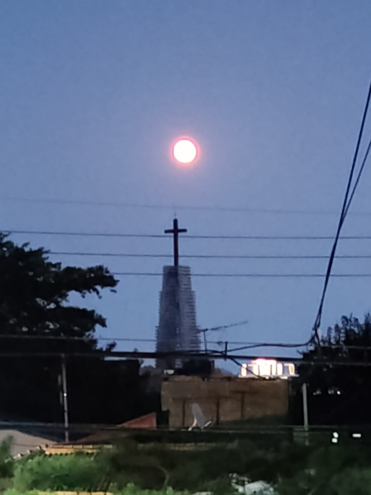
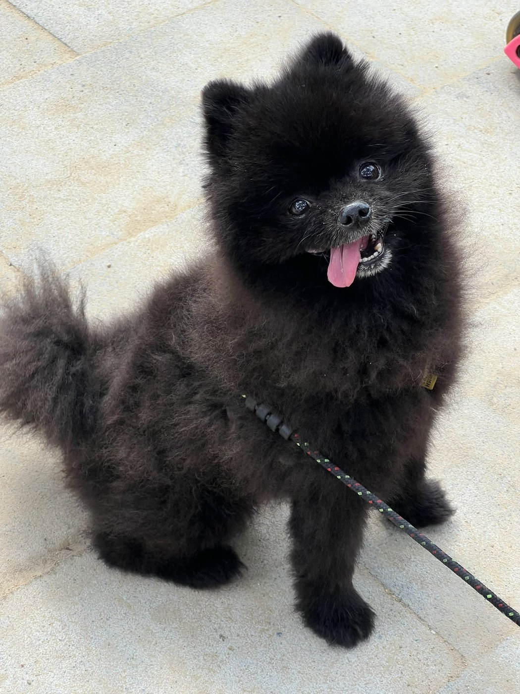
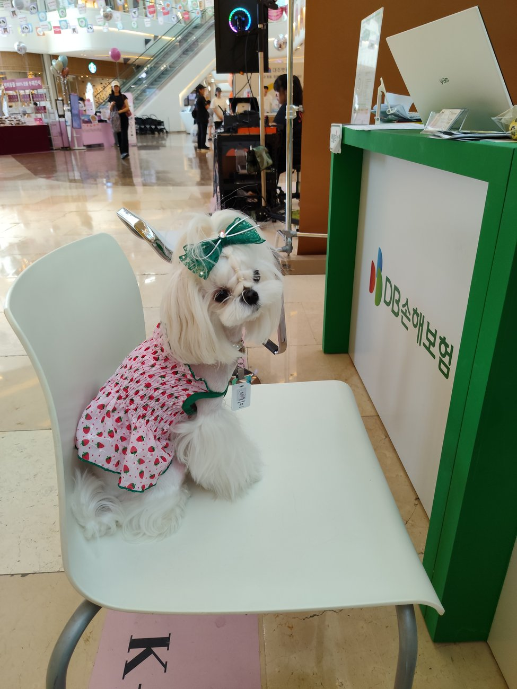

Keine Sehenswürdigkeiten, keine Tipps für den perfekten Tag. Nur Dinge, die mir im koreanischen Alltag auffielen – und die eine Frage auslösten, der ich dann nachgegangen bin. Manchmal führt ein Schluck Kaffee tiefer in ein Land hinein als jeder Palast. ☕
Wie kam der Kaffee nach Korea – und warum röstet hier jede zweite Ecke ihren eigenen?

Ein Café-Moment in Korea – Kaffee, der mit Sorgfalt gemacht ist.
Ich war auf ein Teeland eingestellt. Stattdessen komme ich kaum einen Häuserblock weit, ohne an einer kleinen Rösterei vorbeizukommen, in der jemand höchst ernsthaft grüne Bohnen in einer glänzenden Trommel dreht. Der Duft ist überall. Für ein Land, bei dem ich an Grüntee und Zeremonien dachte, ist das ein erstaunlich gutes Problem.
Korea trinkt Kaffee. Und zwar nicht nebenbei. Seoul gehört zu den Städten mit der höchsten Café-Dichte der Welt – an manchen Kreuzungen stehen sich gleich mehrere gegenüber, und erstaunlich viele sind keine Ketten, sondern winzige, eigenwillige Läden, die ihre Bohnen selbst rösten. Wie kommt eine jahrhundertealte Teekultur zu dieser Leidenschaft für das schwarze Gegenteil?
Die Legende hat sogar einen König. Erzählt wird, dass Gojong, Koreas letzter König und erster Kaiser, 1896 auf der Flucht vor der japanischen Bedrohung Zuflucht in der russischen Gesandtschaft suchte – und dort seine erste Tasse Kaffee bekam. Angeblich war er sofort verliebt. Zurück im Palast ließ er sich einen kleinen westlichen Pavillon bauen, in dem er täglich Kaffee trank. Eine schöne Geschichte. Ganz stimmt sie vermutlich nicht: Schon in den 1880er-Jahren wurde am Hof ausländischen Gästen Kaffee serviert, ein amerikanischer Besucher beschrieb das Getränk 1883 als seltene Köstlichkeit. Gojong war also kaum der Erste – aber er war offenbar der begeistertste, und das hat sich in die Erinnerung des Landes eingebrannt.
Die Koreaner hatten anfangs keinen eigenen Namen dafür. Sie nannten es gabae – oder spöttisch yangtang-guk, „westliche Suppe". Eine bittere braune Brühe, die die Fremden tranken. Aus dieser Neugier wuchs im 20. Jahrhundert die Dabang-Kultur: Kaffeehäuser, die weit mehr waren als Orte zum Trinken. In den Dabangs traf man sich, verhandelte, dichtete, verliebte sich. Sie waren die Wohnzimmer einer Gesellschaft, die enge Wohnungen und wenig öffentlichen Raum hatte.
Dann kam der Krieg – und mit den amerikanischen Soldaten der Instantkaffee. Korea entwickelte eine geradezu zärtliche Beziehung zu dem löslichen Pulver und erfand 1976 etwas zutiefst Koreanisches: den „Coffee Mix", das kleine Stäbchen, in dem Kaffee, Zucker und Milchpulver schon fertig gemischt sind. Bis heute steht in fast jedem Büro, jedem Tempel, jeder Wohnung eine Schachtel davon. Süß, schnell, verlässlich.

Der Klassiker für zwischendurch: ein „Coffee Mix" von Maxim – Kaffee, Zucker und Milchpulver schon fertig gemischt.
Besonders verrät sich diese Liebe an einer kleinen Marotte, über die die Koreaner selbst lachen. Es gibt ein Wort dafür: eoljuga – die Kurzform für „Lieber sterbe ich erfroren, als auf meinen Eis-Americano zu verzichten". Selbst bei klirrendem Winter, wenn draußen der Atem gefriert, umklammern die Menschen ihren eisgekühlten Kaffee. Wärmende Getränke gäbe es genug – aber der Eis-Americano ist Kult, fast schon eine Trotzhaltung. Man muss es gesehen haben: Minusgrade, dicke Daunenjacke, dampfende Nase – und in der Hand ein beschlagener Becher mit klirrenden Eiswürfeln.
Und die vielen kleinen Röstereien? Sie sind die jüngste Welle – aber sie passen perfekt ins Muster. In einer Stadt, in der Wohnungen klein und Tage lang sind, ist das Café der verlängerte Wohnraum: zum Lernen, Arbeiten, Verabreden, Für-sich-sein. Dazu kommt ein feines Gespür für Ästhetik und Handwerk – ein eigener Laden mit eigener Röstung ist auch ein Stück Identität. So sitzt in Korea die ganze Geschichte in einer Tasse: die Neugier eines Königs, das Wohnzimmer der Dabangs, das süße Stäbchen für zwischendurch und die ernste junge Rösterin von nebenan.

Das „röstet selbst" zum Anschauen: Röstmaschine und grüne Rohbohnen in einer koreanischen Rösterei.
Vom heimlich geschmuggelten Königs-Schluck zur Rösterei an jeder Ecke. Wer hätte das gedacht?
💦 Wassernebel
Warum besprüht Seoul seine Menschen im Hochsommer mit feinem Nebel?

Kühlender Nebel aus dem Nichts – man läuft einfach hindurch und bleibt trocken.
Der erste Sommer in Seoul fühlt sich an, als atme man warme Suppe. Und dann, mitten auf dem Weg über eine große Kreuzung, legt sich plötzlich ein feiner, kühler Schleier auf Gesicht und Arme – von oben. Mein erster Gedanke: ein Rohr ist geplatzt. Aber niemand zuckt. Die Menschen gehen einfach hindurch, als wäre es das Selbstverständlichste der Welt. Und bleiben trocken.
Was mir da über den Kopf gesprüht wurde, hat einen Namen: Cooling Fog, kühlender Nebel. In den koreanischen Sommern, die mit erbarmungslosen Hitzewellen und einer schwülen „gefühlten Temperatur" jenseits der 35 Grad daherkommen, haben die Städte begonnen, ihre öffentlichen Plätze aktiv herunterzukühlen. An Bushaltestellen, Fußgängerüberwegen, in Parks und auf Plätzen hängen feine Düsen, die auf Knopfdruck oder automatisch einen Nebel versprühen.
Das Schöne daran ist die Physik. Man wird nicht nass, weil die Tröpfchen winzig sind – die Stadt Seoul beschreibt sie als etwa ein Zehnmillionstel der Größe eines Regentropfens. So fein, dass sie gar nicht erst als Wasser auf der Haut ankommen, sondern in der Luft verdunsten. Und genau beim Verdunsten passiert das Entscheidende: Wasser braucht Energie, um zu Dampf zu werden, und diese Energie zieht es als Wärme aus der Umgebungsluft. Die Luft kühlt ab. Die Städte sprechen von drei bis fünf Grad weniger – eine Art „Straßen-Klimaanlage" für alle, die keine eigene haben oder den Tag draußen verbringen.
Und der Nebel kommt nicht allein. Er gehört zu einer ganzen Familie von Hitze-Hilfen, die im Sommer über die Stadt verteilt werden: Sonnensegel und große Schirme über Fußgängerüberwegen, damit man im Schatten auf Grün wartet; Bänke an Haltestellen, die sich kühlen, sobald es zu heiß wird; Trinkwasserstellen, Ruheräume mit Klimaanlage. Viele der Nebeldüsen schalten sich automatisch ein, sobald eine bestimmte Temperatur überschritten wird – die Stadt reagiert also, ohne dass jemand einen Knopf drücken muss.

Entlang des Gehwegs sprühen feine Düsen – kaum sichtbar, aber sofort spürbar.
Ich bin dem ehrlich nachgegangen, und so eindeutig sind die drei bis fünf Grad nicht. Unabhängige Messungen – etwa eine Studie an halboffenen Haltestellen – fanden eher bescheidene Effekte, teils nur rund ein Grad, stark abhängig von Wind und Luftfeuchte. Bei Schwüle kann der Nebel die Luft sogar feuchter machen. Die großen Zahlen stammen meist aus den Ankündigungen der Stadtverwaltungen, sind also ein bisschen Behörden-Optimismus.
Aber – und das ist der Punkt – die gefühlte Erleichterung ist sofort da. Aus der Brüh-Kreuzung tritt man zwei Sekunden lang in eine kühle Wolke, und der Körper jubelt, ganz gleich, was das Thermometer sagt. Und je länger ich darüber nachdenke, desto mehr sagt dieser Nebel über Korea aus. Er ist freiwillig, kostenlos, für jeden da. Jemand hat sich überlegt: Die Menschen müssen hier bei dieser Hitze warten – also kühlen wir die Luft, in der sie warten. Der öffentliche Raum wird nicht nur verwaltet, er wird umsorgt.
Es ist eine kleine Geste, aber eine, die man in dem Moment, in dem sie einen trifft, sofort versteht: Du stehst nicht allein in der Hitze. Die Stadt denkt an dich.
Eine ganze Stadt, die ihren Menschen Kühlung von oben schenkt. Wer hätte das gedacht?
🌙 Mond & Hase
Welche Bedeutung hat der Mond in Korea – und warum sitzt dort ein Hase?

Vollmond-Aufgang über Seoul – der runde Mond steigt glühend über die Dächer.
Es war zu Chuseok, dem großen Erntedankfest, als jemand neben mir nach oben zeigte und fragte: „Siehst du den Hasen?" Ich sah erst nur den riesigen, fast peinlich hellen Vollmond. Doch dann verschoben sich die dunklen Flecken vor meinen Augen zu einer Gestalt – und seitdem kann ich sie nicht mehr nicht sehen.
In Korea ist der Mond kein Nebendarsteller. Der alte Kalender ist ein Mondkalender, und die beiden größten Feste des Jahres hängen an ihm: Seollal, das Neujahr, und Chuseok, das Erntedank- und Familienfest im Herbst. Chuseok fällt auf den Vollmond der Erntezeit – und dieser Mond gilt als der rundeste, hellste des Jahres, ein Sinnbild für Fülle, Dankbarkeit und die Familie, die wieder zusammenkommt. Man wünscht sich unter ihm etwas. Man schaut hinauf wie zu einem alten Verwandten.
Dieser Mond war früher sogar ein Treffpunkt. Zu Daeboreum, dem ersten Vollmond des neuen Jahres, stieg man auf Hügel, um ihn als Erster aufgehen zu sehen – wer das schaffte, dem sollte ein Wunsch in Erfüllung gehen. Und zum Chuseok-Vollmond tanzten Frauen den Ganggangsullae: Hand in Hand, in einem großen Kreis, singend, die ganze Nacht unter dem runden Licht. Ein Reigen, der heute zum immateriellen Weltkulturerbe zählt. Der Mond war nie nur Dekoration am Himmel – er war der Grund, zusammenzukommen.
Und in diesem Mond wohnt, so sieht es ganz Ostasien, ein Hase: der Daltokki, der Mondhase. Die dunklen Flecken, die der Westen zum „Mann im Mond" verrührt, sind hier ein Tier mit einem Mörser. Nur – was stampft er da? In der chinesischen Erzählung mischt er ein Elixier der Unsterblichkeit. In der koreanischen (und japanischen) Fassung tut er etwas viel Bodenständigeres und Schöneres: Er stampft Tteok, Reiskuchen. Ausgerechnet die Speise, die zu genau diesen Mondfesten gegessen wird. Der Hase da oben ist also, wenn man so will, der himmlische Konditor des Festes.
Schau genau hin: In den dunklen Flecken sitzt der Hase und stampft mit seinem Mörser. 🐇
Bleibt die eigentliche Frage: Warum überhaupt ein Hase? Die Legende erzählt es so. Ein Himmelsherrscher steigt als hungriger Bettler verkleidet zur Erde herab, um drei Tiere zu prüfen – einen Fuchs, einen Affen und einen Hasen. Fuchs und Affe bringen Fisch und Früchte herbei. Nur der Hase findet nichts, das der Rede wert wäre. Da tut er das Unfassbare: Er wirft sich selbst ins Feuer, um dem Fremden die einzige Nahrung zu geben, die er hat – sich. Der Herrscher, zutiefst gerührt von dieser Selbstaufopferung, hält ihn auf und setzt sein Bild für immer in den Mond, damit alle Welt sich an diese Güte erinnert. (Oft wird die Geschichte bis zu einer alten buddhistischen Erzählung zurückgeführt – die genaue Herkunft variiert von Erzähler zu Erzähler.)
Mir gefällt, wie rund das alles ist. Ein Hase, der einst alles gab, was er hatte – und der nun bis in alle Ewigkeit die Reiskuchen stampft, die ein ganzes Land isst, wenn es sich unter demselben Mond zur Familie versammelt. Großzügigkeit, die zu Essen wird, das Menschen zusammenbringt. Schöner kann eine Mondfigur kaum beschäftigt sein.
Seitdem suche ich bei jedem Vollmond den kleinen Bäcker da oben. Und finde ihn jedes Mal.
Kein Mann im Mond, sondern ein Hase, der Kuchen stampft. Wer hätte das gedacht?
✝️ Rote Kreuze
Warum glüht der koreanische Nachthimmel voller roter Kreuze?

Unter dem aufgehenden Mond: ein Kreuz über den Dächern – eines von unzähligen am Seouler Nachthimmel.
Als ich den Vollmond über Seoul aufgehen sah, stand darunter ein schmaler Turm mit einem Kreuz. Erst dachte ich: eine einzelne Kirche. Doch sobald es dunkel wird, bemerkt man es überall – über der ganzen Stadt schweben rote Kreuze, leuchtend, unzählige. Einmal gesehen, kann man sie nicht mehr übersehen.
Man reist nach Korea und erwartet Tempel: Räucherwerk, geschwungene Dächer, goldene Buddhas. Und all das gibt es, in großer Schönheit. Aber hebt man abends den Blick über die Dächer, blinkt der Himmel rot von Dutzenden Kreuzen. Wie kommt ausgerechnet das Land der Tempel zu so vielen Kirchen?
Die Antwort überrascht: Korea ist heute zu fast einem Drittel christlich. Rund ein Fünftel der Menschen ist protestantisch, etwa ein Zehntel katholisch – zusammen sind das mehr Christen als Buddhisten. Und Kirchen gibt es in erstaunlicher Zahl: allein über fünfzigtausend evangelische Gemeinden und Einrichtungen. Kein Wunder, dass die Kreuze am Nachthimmel die Tempel zahlenmäßig weit hinter sich lassen.
Das eigentlich Verblüffende ist, wie jung dieser Glaube hier ist. Der Katholizismus kam Ende des 18. Jahrhunderts – nicht durch Missionare, sondern durch koreanische Gelehrte, die ihn aus Peking mitbrachten. Die protestantischen Missionare folgten erst in den 1880er-Jahren; sie bauten die ersten modernen Schulen und Krankenhäuser des Landes. Richtig explodiert ist das Christentum dann nach dem Koreakrieg: In nur zwei Jahrzehnten, von den 1960ern bis in die 1980er, wuchs die Zahl der Protestanten von unter drei auf über zehn Millionen. In kaum mehr als hundert Jahren hat sich ein neuer Glaube ins Land gewebt.
Warum es so schnell Wurzeln schlug, hat viel mit Geschichte zu tun. Die Missionare brachten nicht nur ihren Glauben, sondern auch Bildung und Medizin – viele der ersten Schulen und Krankenhäuser des Landes, und gerade auch Schulen für Mädchen, gingen auf sie zurück. Während der japanischen Besatzung wurden die Kirchen zu Orten nationaler Selbstbehauptung; am Unabhängigkeitsaufruf von 1919 waren auffällig viele Christen beteiligt. Und nach dem Krieg, als Millionen Menschen ihre Dörfer verließen und in die wachsenden Städte strömten, boten die Gemeinden genau das, wonach sich Entwurzelte sehnen: Halt, Hoffnung und eine neue Gemeinschaft.
Und das größte Beispiel steht fast vor meiner neuen Haustür. Auf der Insel Yeouido, mitten in Seoul, wo ich jetzt wohne, liegt die Yoido Full Gospel Church – nach vielen Zählungen die größte christliche Gemeinde der Welt, mit Hunderttausenden Mitgliedern. Begonnen hat sie 1958, in einem einfachen Zelt.
Und doch führt der leuchtende Himmel ein wenig in die Irre. Fast die Hälfte der Koreaner gehört gar keiner Religion an; der sichtbare Glaube ist eher der einer kleinen, aber sehr inbrünstigen Minderheit. Nur: In einem Land, das grelle Leuchtschilder liebt, zeigen auch die Kirchen Flagge. Das Rot – die Farbe des Blutes Christi – leuchtet nachts wie ein Leuchtfeuer über den Dächern, weithin sichtbar, nicht zu übersehen.
So kann über ein und demselben Mond ein Hase Reiskuchen stampfen – und daneben ein rotes Kreuz glühen. Zwei Glaubenswelten, ein Himmel. Wer hätte das gedacht?
🎂 Das Alter
Wie alt ist meine Enkelin – nach koreanischer Rechnung?
Amy ist bei uns gerade 9 geworden. In Korea wäre sie …
9🌍 international (만 나이)
10🎂 traditionell gezählt (세는 나이)
9📅 Jahres-Alter (연 나이)
Meine Enkelin Amy ist gerade 9 geworden – am 12. Oktober, mit Hasenkostüm und Picknick. Doch würde ein Koreaner sie nach ihrem Alter fragen, käme eine andere Zahl heraus. Hier wäre Amy nämlich schon 10. Und hätte man sie im Frühsommer gefragt, wäre sie sogar „zwei Jahre älter" gewesen als zu Hause.
In kaum einem Land war die harmlose Frage „Wie alt bist du?" so kompliziert wie in Korea. Denn bis vor Kurzem trug hier jeder Mensch gleich drei Alter mit sich herum.
Das traditionelle, im Alltag wichtigste ist das gezählte Alter. Dabei ist man schon bei der Geburt ein Jahr alt – die Zeit im Mutterleib zählt mit, eine eigentlich schöne Idee: Das Leben beginnt nicht erst mit dem ersten Atemzug. Und älter wird man nicht an seinem Geburtstag, sondern gemeinsam mit allen anderen: an Neujahr. Alle rücken am selben Tag eine Zahl weiter. Das führt zu einem hübschen Kuriosum: Ein Baby, das am 31. Dezember zur Welt kommt, ist am nächsten Morgen schon zwei Jahre alt – mit einem einzigen Tag Lebenszeit.
Besonders hübsch zeigt sich das an einem Brauch: Am koreanischen Neujahr isst man Tteokguk, eine Reiskuchen-Suppe – und erst wenn man seine Schale gegessen hat, ist man wirklich ein Jahr älter. „Wie viele Schalen Tteokguk hast du schon gegessen?" ist darum eine augenzwinkernde Art, nach dem Alter zu fragen. Älterwerden als etwas, das man gemeinsam isst.
Für Amy heißt das: geboren im Oktober 2017, ist sie bei uns gerade 9 geworden. Nach koreanischer Zählung ist sie 10 – ein Jahr geschenkt. Und weil in dieser Rechnung alle schon am 1. Januar 2026 ein Jahr dazubekamen, war Amy in den ersten Monaten dieses Jahres, vor ihrem Geburtstag, international noch 8 – in Korea aber bereits 10. Zwei Jahre Unterschied, einfach so.
Hinter dem Zahlenwirrwarr steckt etwas zutiefst Koreanisches. Das Alter ist hier nicht bloß eine Zahl, sondern bestimmt, wie man miteinander spricht: Es gibt höfliche und vertraute Sprachebenen, Anreden und Umgangsformen, die vom Altersunterschied abhängen. Darum ist eine der ersten Fragen beim Kennenlernen oft nicht „Wie heißt du?", sondern „In welchem Jahr bist du geboren?" – nicht aus Neugier, sondern um zu wissen, wie man sich zueinander verhält. Und dass alle gemeinsam an Neujahr altern, passt zu einem Land, das vieles lieber zusammen tut als jeder für sich.
2023 wurde es den Koreanern dann selbst zu bunt. Seit Juni jenes Jahres gilt in Gesetzen und auf Ämtern offiziell nur noch das internationale Alter – über Nacht wurden Millionen Menschen ein, zwei Jahre „jünger". Im Alltag aber hält sich die alte Zählung hartnäckig: Frag auf dem Spielplatz, und manche Großmutter würde Amy noch immer für 10 halten.
So bekam Amy in Korea ihr schönstes Geschenk schon vor dem Geburtstag: ein, zwei Jahre extra – völlig gratis. Wer hätte das gedacht?
🐶 Die Hunde
Warum werden Hunde in Korea behandelt wie Kinder?

Herausgeputzt und heiß geliebt: ein kleiner Zwergspitz auf Spaziergang in Seoul.
Es dauert in Korea keine halbe Stunde, bis man dem ersten Hund im Kinderwagen begegnet. Herausgeputzt, mit Mäntelchen, auf dem Weg ins Hundecafé oder zum Hundefriseur. Und während die kleinen Vierbeiner überall sind, fällt etwas anderes auf: Kinderwagen mit Babys sieht man erstaunlich selten.
Das ist kein Gefühl, das belegen die Zahlen auf fast schon unglaubliche Weise. 2023 wurden in Korea erstmals mehr Hunde-Buggys verkauft als Kinderwagen. Beim größten Online-Händler des Landes entfielen in den ersten neun Monaten rund 57 Prozent der verkauften „Buggys" auf Hunde, nur noch 43 Prozent auf Babys. Vor wenigen Jahren war es noch genau umgekehrt. Man muss sich das kurz vorstellen: Im Park rollt heute öfter ein Hund an einem vorbei als ein Säugling.
Kein Baby, sondern ein Pudel: Hunde-Buggys gehören in Seoul längst zum Straßenbild.
Dahinter steht eine der tiefgreifendsten Entwicklungen des Landes. Korea hat die niedrigste Geburtenrate der Welt – statistisch bekommt eine Frau im Schnitt nur noch etwa 0,7 Kinder – ein weltweiter Tiefstwert, gegen den die Regierung mit Milliarden an Prämien und Programmen ankämpft, bisher weitgehend vergeblich. Wohnungen sind teuer, die Arbeitszeiten lang, und immer mehr Menschen entscheiden sich für ein Haustier statt oder vor einem Kind. Der Hund rückt an eine Stelle, die früher selbstverständlich den Kindern gehörte: Er wird zum Familienmitglied, zum „Fellkind". Daraus ist eine ganze Welt gewachsen – Hundecafés, Hundespas, Hundekleidung, Hundehotels, sogar Bestattungen für Haustiere.
Inzwischen lebt in etwa jedem vierten koreanischen Haushalt ein Haustier, und rundherum ist eine eigene Welt – fast eine eigene Sprache – entstanden: Herrchen und Frauchen nennen sich „Hunde-Eltern", feiern Hundegeburtstage mit Törtchen und kleinem Hut, kaufen Mäntelchen und Schühchen in Kaufhaus-Etagen, die es ausschließlich für Vierbeiner gibt, und verabreden sich im Hundecafé. Und der Buggy ist dabei oft gar keine Verwöhn-Marotte: Er schützt kleine, junge oder altersschwache Hunde vor der Sommerhitze, vor Gedränge und dem Lärm der Großstadt – und sorgt dafür, dass sie überallhin mitdürfen. Dabei sein ist eben alles, auch für den Hund. 🐾

Herausgeputzt bis zur Schleife: ein Malteser im Erdbeer-Kleidchen bei einem Haustier-Event.
Und hier kommt die eigentliche „Wer hätte das gedacht?"-Wendung: Es ist dasselbe Land, das jahrzehntelang für den Verzehr von Hundefleisch bekannt war. Doch im Januar 2024 stimmte das koreanische Parlament fast einstimmig für ein Gesetz, das Zucht, Schlachtung und Verkauf von Hunden zum Verzehr verbietet – vollständig ab 2027. Die Betriebe bekommen Hilfe beim Umstieg; das Essen selbst wird nicht bestraft. Aber die Richtung ist unmissverständlich. Vom Tier auf dem Teller zum Tier im Buggy – in kaum einer Generation.
Manchmal denke ich, dass dieser kleine, herausgeputzte Hund im Kinderwagen mehr über das heutige Korea erzählt als jeder Wolkenkratzer. Er ist ein liebevolles, ein bisschen wehmütiges Spiegelbild: ein Land, das seine Zuwendung nicht verliert, sondern verschiebt. Die Sehnsucht, für jemanden zu sorgen, ihn zu verwöhnen, ihn als Familie zu lieben – sie bleibt. Sie trägt nur manchmal ein Fellmäntelchen. Und wenn Marie, Amy und ich zu dritt durch die Stadt ziehen, merke ich: Das Schönste ist und bleibt doch, füreinander da zu sein – ganz gleich, auf wie vielen Beinen.
Ein Hund im Arm – dahinter die Kinderwagen. Zwei Welten in einem Bild.
Vom Hof aufs Sofa, vom Nutztier zum Familienmitglied – und im Buggy statt im Kinderwagen. Wer hätte das gedacht?
✏️ Lernen & Wandel
Warum sitzen in Koreas Dorfschulen plötzlich Großmütter in der ersten Klasse?
„Mit achtzig lernt eine Großmutter zum ersten Mal, ihren eigenen Namen zu schreiben.“
Ein stilles Wunder in Koreas Dörfern
Es ist eine Geschichte, die mich nicht mehr loslässt, seit Marie sie erwähnte. In vielen Dörfern Koreas sind die neuen Erstklässler keine Kinder mehr – sondern Großmütter. Mit siebzig, achtzig Jahren drücken sie zum ersten Mal in ihrem Leben die Schulbank und lernen, Buchstaben zu malen.
Dahinter stehen zwei Entwicklungen, die sich auf rührende Weise treffen. Die erste kennen wir schon von den Hunden: Weil Korea so wenige Kinder bekommt und die Jungen in die Städte ziehen, leeren sich die Dorfschulen. An einer Grundschule in den Bergen sind aus einst fast 700 Schülern ganze 22 geworden. Manchen Schulen droht die Schließung – es fehlen schlicht die Kinder, um die Klassen zu füllen.
Die zweite ist leiser und älter. Viele Frauen auf dem Land, heute hochbetagt, durften als Mädchen nie zur Schule. Es war die Zeit von Krieg und Armut, und in einer streng patriarchalen Gesellschaft schickte man die Söhne zum Lernen, während die Töchter zu Hause arbeiteten. Manche erzählen, wie sie sich als Kind hinter einem Baum versteckten und weinten, während sie den Brüdern auf dem Schulweg nachsahen. Noch 2017 konnten fast 70 Prozent der über 80-Jährigen nicht lesen und schreiben – ganz überwiegend Frauen.
Und nun fügt das Schicksal die beiden Fäden zusammen: Die leeren Stühle in den Dorfschulen füllen sich wieder – mit genau diesen Frauen. Eine Großmutter sitzt an einem winzigen Pult neben einem Siebenjährigen, manchmal neben dem eigenen Enkelkind, und zieht mit zittriger Hand ihre ersten Linien. Nicht für eine Karriere, nicht für ein Zeugnis – sondern um endlich ein Busschild lesen zu können, den Brief einer Enkelin, ein Kirchenlied. Um mit achtzig zum ersten Mal den eigenen Namen zu schreiben. Manche von ihnen fangen später sogar an zu dichten und veröffentlichen kleine Gedichtbände.
Wer einmal gesehen hat, wie eine alte Frau nach Jahrzehnten zum ersten Mal ihre Unterschrift unter ein Blatt setzt – nicht mehr mit dem Daumenabdruck, sondern mit ihrem Namen –, der versteht, worum es hier wirklich geht. Es geht um Würde. Um das Gefühl, endlich dazuzugehören in einer Welt aus Schrift, vor der man sich ein Leben lang ein wenig geschämt hat.
Und hier schließt sich der Kreis zu dem, was Marie beobachtet hat: Wie sehr sich die Rolle der Frau in Korea verändert hat – in einer einzigen Lebensspanne. Die Enkelinnen dieser Großmütter gehören heute zu den bestausgebildeten Frauen der Welt; junge Koreanerinnen studieren inzwischen sogar häufiger als die jungen Männer. Vom Mädchen, das nicht lernen durfte, zur Enkelin, die alles werden kann – in nur drei Generationen.
Deshalb ist dieses leere Klassenzimmer für mich kein Ort des Mangels, sondern eine Brücke: zwischen dem Mädchen, das man einst weggeschickt hat, und den Mädchen, denen heute die ganze Welt offensteht. Und wenn eine Großmutter endlich ihren Namen schreibt, holt sie nicht bloß eine verpasste Kindheit nach. Sie schließt einen Kreis, der sechzig Jahre offen war.
Leere Schulen, die sich den Alten öffnen – und Frauen, die mit achtzig schreiben lernen, was man ihnen als Kind verwehrte. Wer hätte das gedacht?
⚖️ Frauen & Freiheit
Will eine Koreanerin heute noch Hausfrau und Mutter sein?
„Sie dürfen heute alles lernen – nur die alte Rolle sollen sie bitte trotzdem noch spielen.“
Koreas Frauen zwischen Aufbruch und Tradition
Erinnerst du dich an die Großmütter, die mit achtzig schreiben lernen? Ihre Enkelinnen dürfen heute alles studieren, alles werden. Und so stellt sich die Frage ganz neu: Will eine Koreanerin überhaupt noch „nur" Hausfrau und Mutter sein? Die kurze Antwort: immer seltener – und das verändert gerade das ganze Land.
Bei der Bildung ist die Revolution längst vollzogen. Koreanerinnen gehören zu den bestausgebildeten Frauen der Welt; junge Frauen gehen inzwischen sogar häufiger an die Universität als junge Männer. Sie wollen Berufe, Unabhängigkeit, ein eigenes Leben – und das mit einer Selbstverständlichkeit, die ihre Großmütter sprachlos machen würde.
Doch – und hier beginnt das eigentlich Überraschende – die Wirklichkeit im Berufsleben hat mit diesem Aufbruch nicht Schritt gehalten. Korea hat den größten Lohnunterschied zwischen Männern und Frauen in der gesamten OECD: Frauen verdienen im Schnitt rund dreißig Prozent weniger – und das trotz ihrer Spitzenbildung. Typisch ist die sogenannte „M-Kurve": Frauen arbeiten in den Zwanzigern, steigen um die Dreißig – bei Heirat und Kind – aus dem Beruf aus und kehren, wenn überhaupt, erst viel später zurück.
Der Grund dafür ist weniger der böse Wille Einzelner als eine zähe Erwartung. Noch immer gilt vielerorts: Eine Frau darf berufstätig sein – solange sie zusätzlich den Haushalt führt, die Kinder erzieht und sich oft auch um die Schwiegereltern kümmert. Diese „zweite Schicht" nach Feierabend lastet fast allein auf ihr. Wer da Karriere und Familie zugleich will, zahlt einen hohen Preis.
Immer mehr junge Frauen ziehen daraus eine klare Konsequenz: Sie sagen Nein. Nicht laut, sondern durch ihre Entscheidungen. Fachleute deuten Koreas weltniedrigste Geburtenrate auch als eine Art stillen Streik – lieber kein Kind als das alte Gesamtpaket aus Beruf plus fast aller Hausarbeit. Es gibt sogar eine kleine, aber viel diskutierte Strömung, die „4B-Bewegung", deren Anhängerinnen Ehe, Kinder, Beziehung und Partnerschaft mit Männern grundsätzlich ablehnen.
Doch so einfach ist die Geschichte nicht, und das gehört zur Ehrlichkeit dazu. Das Thema hat die Gesellschaft tief gespalten. „Feministin" ist in Korea zu einem aufgeladenen, für manche fast anrüchigen Wort geworden. Viele junge Männer fühlen sich ihrerseits benachteiligt – durch den langen Militärdienst, den harten Arbeitsmarkt – und reagieren mit scharfer Ablehnung. Gleichberechtigung ist hier kein ruhiges Dauerthema, sondern ein lauter, politischer Streit, der mitten durch Freundeskreise und Wahlkämpfe geht.
Dabei bewegt sich durchaus etwas: Es gibt Gesetze gegen Diskriminierung, ausgebauten Elternurlaub, ein eigenes Ministerium für Gleichstellung, und Frauen rücken in Berufe und Führungspositionen vor, die ihnen früher verschlossen waren. Der Wandel ist also real – er verläuft nur ungleichmäßig, mal rasant, mal zäh, und wird bei jedem Schritt neu verhandelt.
Und so zeigt sich das vielleicht größte Paradox des Landes: Ausgerechnet eine der modernsten, digitalsten, bestausgebildeten Nationen der Welt ist im Alltag der Geschlechter erstaunlich altmodisch geblieben. Ihre Frauen aber schreiben den alten Vertrag gerade neu – mit ihren Diplomen, mit ihren Stimmen, und ganz leise auch mit den leeren Kinderwagen.
Ein Land, das seine Töchter alles lernen lässt – und dann staunt, dass sie die alte Rolle nicht mehr spielen wollen. Wer hätte das gedacht?
🧔 Die Männer
Hat sich das Patriarchat entwickelt – oder ent-wickelt?
„Fünfhundert Jahre Männerherrschaft – und ausgerechnet die jungen Männer fühlen sich heute als die Verlierer.“
Koreas Geschlechter-Graben
In diesem Land hält sich eine der ältesten und strengsten patriarchalen Ordnungen der Welt – und trotzdem tobt gerade ein erbitterter „Geschlechterkampf". Das wirft eine schöne, doppeldeutige Frage auf: Entwickelt sich das Patriarchat gerade *weiter*, reift es zu etwas Neuem – oder *ent-wickelt* es sich, schält sich aus seiner alten Hülle und löst sich auf? Das Verblüffende ist: Beides scheint gleichzeitig zu geschehen.
Um zu verstehen, was heute passiert, muss man fünfhundert Jahre zurück. Über die ganze Joseon-Dynastie machte Korea den Neokonfuzianismus zur Staatsidee – mit einer klaren Rangordnung, in der der Mann über der Frau stand. Namjon-yeobi hieß der Grundsatz: „Mann hoch, Frau niedrig". Eine Frau folgte lebenslang erst dem Vater, dann dem Ehemann, dann dem Sohn; nur Söhne führten die Ahnenlinie weiter. Diese Ordnung saß so tief, dass ihr letzter gesetzlicher Rest – das männliche „Haushaltsvorstand"-System – erst 2008 abgeschafft wurde.
Und dann, in nur einer einzigen Generation, kam der Bruch. Die Töchter und Enkelinnen jener Frauen, die als Mädchen nicht einmal zur Schule durften, gehören heute zu den bestausgebildeten der Welt. Sie studieren häufiger als die Männer, wollen Beruf, Unabhängigkeit, ein eigenes Leben. Fünfhundert Jahre Selbstverständlichkeit beginnen sich aufzulösen – das Patriarchat „ent-wickelt" sich, im Wortsinn.
Doch – und das ist das eigentlich Überraschende – ausgerechnet die jungen Männer fühlen sich dabei nicht als Erben einer mächtigen Ordnung, sondern als deren Verlierer. Umfragen zeigen: rund drei Viertel der Männer in den Zwanzigern lehnen „Feminismus" ab. Zwei Gründe stehen im Zentrum: der Wehrdienst, den nur sie leisten müssen (etwa anderthalb Jahre Lebenszeit), und ein gnadenloser Arbeitsmarkt, auf dem sie die Förderung von Frauen als „umgekehrte Diskriminierung" empfinden. Ihr Gefühl, auf eine Formel gebracht: Wir sollen für eine Macht büßen, die wir selbst nie besessen haben.
Aus diesem Gefühl wurde ein politisches Erdbeben. Bei der Wahl 2022 warb der spätere Präsident gezielt um die jungen Männer – mit dem Versprechen, das Gleichstellungsministerium abzuschaffen, und der Behauptung, eine Diskriminierung von Frauen gebe es ohnehin nicht mehr. Das Ergebnis war ein tiefer Graben: junge Männer auf der einen, junge Frauen auf der anderen Seite. „Feministin" wurde zum Reizwort, der „Geschlechterkampf" (젠더 갈등) zum politischen Dauerthema.
Wer hat nun recht? Vermutlich tragen beide Seiten echte Wunden. Die Lasten der jungen Männer – Militärdienst, Zukunftsangst – sind real und werden oft kleingeredet. Und zugleich bleibt wahr, dass Frauen im Schnitt rund dreißig Prozent weniger verdienen und die Hausarbeit fast allein stemmen. Das eigentlich Tragische: Zwei Gruppen, die unter demselben erschöpfenden System leiden – endlose Arbeitszeiten, teure Wohnungen, erbarmungsloser Wettbewerb –, kämpfen gegeneinander, statt gemeinsam dagegen.
Und so steht Korea zwischen zwei Zeitaltern. Die alte Ordnung ist nicht einfach verschwunden; sie wankt, wehrt sich, verschiebt sich. Vielleicht reift daraus etwas Neues, Gerechteres. Vielleicht ist es auch nur ein schmerzhaftes Auseinanderfallen, dessen Ausgang niemand kennt. Die leeren Kinderwagen, die erbitterten Debatten und die Großmütter mit dem Schreibheft – sie alle gehören zu ein und derselben großen Verwandlung.
Ein jahrhundertealtes Patriarchat, das sich nicht entscheiden kann, ob es sich weiterentwickelt oder auflöst. Wer hätte das gedacht?
🎓 Der Ehrgeiz
Warum hält ein ganzes Land für eine einzige Prüfung den Atem an?
Wie ernst Korea es mit der Bildung meint:
80 %der Schüler gehen in bezahlte Nachhilfe
29 Bio.Won pro Jahr für Nachhilfe (~20 Mrd. $)
35 MinFlugverbot während der Prüfung
An einem Tag im November hält ganz Korea buchstäblich den Atem an. Flugzeuge bleiben am Boden, die Börse öffnet später, Büros fangen erst um zehn an, und vor den Schulen stehen Eltern, die beten. Der Grund: eine einzige Prüfung. Und die Frage drängt sich auf – warum entscheidet ein Test über so viel?
Die Prüfung heißt Suneung: ein neunstündiger Marathon aus fünf Teilen, den rund eine halbe Million junger Menschen am selben Tag ablegen. Und das Land organisiert sich an diesem Tag komplett um sie herum. Während des Hörverstehen-Teils in Englisch gilt ein 35-minütiges Flugverbot – Maschinen müssen oben bleiben oder warten, damit kein Fluglärm stört. Die Börse und viele Firmen starten eine Stunde später, damit die Straßen frei sind. Polizisten fahren verspätete Schüler mit Blaulicht zur Prüfung. Und jüngere Kinder stehen morgens vor den Toren und feuern die Älteren an. Für einen Tag dreht sich eine ganze Nation um Teenager mit Bleistiften.
Warum so extrem? Die Antwort liegt in einer atemberaubenden Geschichte. Korea ist in nur rund fünfzig Jahren vom ärmsten Land der Welt zu einer reichen Industrienation aufgestiegen – das „Wunder am Han". In diesem rasanten Aufstieg wurde Bildung zur wichtigsten Leiter nach oben: Welche Universität man besucht – vor allem die drei Elite-Unis, zusammen „SKY" genannt –, kann den ganzen Lebensweg prägen: Beruf, Ansehen, sogar die Heiratschancen.
Also setzen Familien alles daran. Acht von zehn Schülern besuchen private Paukschulen – die „Hagwon" –, viele bis spät in die Nacht. 2024 gaben die Haushalte dafür zusammen die Rekordsumme von 29,2 Billionen Won (rund 20 Milliarden Dollar) aus. Und jetzt das eigentlich Verblüffende: Während die Zahl der Kinder immer weiter sinkt, steigen diese Ausgaben Jahr für Jahr auf neue Höchststände. Weniger Kinder – aber für jedes einzelne wird noch mehr investiert.
Wie unerbittlich es im Prüfungsjahr zugeht, zeigt ein geflügeltes Wort: „Vier bestehst du, fünf fällst du durch" (사당오락). Wer nur vier Stunden schläft, so die bittere Faustregel, kommt durch – wer sich fünf gönnt, verliert. Man muss es nicht wörtlich nehmen, um zu spüren, mit welcher Härte hier um jeden einzelnen Punkt gerungen wird.
Diese Lernleidenschaft hat Erstaunliches geschaffen: eine der am besten ausgebildeten Gesellschaften der Welt, Spitzenplätze in internationalen Vergleichstests, und einen echten Motor hinter Koreas Erfolg. Dass ein so kleines, rohstoffarmes Land heute Smartphones, Autos und Popkultur in die ganze Welt exportiert, hat viel mit genau diesem Ehrgeiz zu tun. Man kann ihn durchaus bewundern.
Aber er hat auch seinen Preis, und das gehört zur Ehrlichkeit dazu. Kindheiten, die bis Mitternacht im Klassenzimmer vergehen; ein Druck, der schon auf Zehnjährigen lastet. Junge Koreaner haben für ihre eigene, erbarmungslose Wettbewerbsgesellschaft sogar ein bitteres Wort geprägt: „Hell Joseon" – die Hölle Joseon. Der Ehrgeiz ist Motor und Bürde zugleich.
Ein ganzes Land, das seine Flugzeuge am Boden lässt, damit seine Kinder sich konzentrieren können – aus der Erinnerung, dass Lernen einst der einzige Weg nach oben war. Wer hätte das gedacht?
🌑 Die Kehrseite
Was kostet das Wunder? Die Kehrseite der Medaille
„Dasselbe Licht, das Korea so hell strahlen lässt, wirft auch einen langen Schatten.“
Der Preis des Wunders
In der Ehrgeiz-Geschichte haben wir Koreas glänzende Seite gesehen: den rasanten Aufstieg, die Spitzenleistungen, den unbändigen Willen. Aber jede Medaille hat eine Rückseite – und sie ehrlich zu zeigen, bin ich den Menschen schuldig, die sie tragen. Denn hinter dem Hochglanzbild liegt eine stillere, schwerere Wirklichkeit.
Die schwerste Zahl zuerst, ganz behutsam: Korea hat seit rund zwanzig Jahren die höchste Suizidrate der OECD – zuletzt etwa 29 auf 100.000 Menschen, fast dreimal so viel wie im Durchschnitt der Industrieländer. Am bittersten: Bei den Teenagern, den Zwanzig- und Dreißigjährigen ist es die häufigste Todesursache überhaupt. Hinter jeder dieser Zahlen steht ein Mensch, der den Druck, den Vergleich, die Angst zu versagen nicht mehr tragen konnte.
Warum? Es ist derselbe Motor. In einer Gesellschaft, die den eigenen Wert in Noten, Jobtiteln, Aussehen und Rang misst, fühlt sich Zurückfallen an wie Herausfallen. Der ständige Vergleich, der Zwang, „das Gesicht zu wahren", lassen wenig Raum, einfach müde, gewöhnlich oder unvollkommen sein zu dürfen. Und weil psychische Erkrankungen stark stigmatisiert sind, leiden viele lieber im Stillen, als sich Hilfe zu holen.
Besonders die Jungen spüren das. Schon als Kinder im Prüfungs-Hamsterrad, als junge Erwachsene im Verdrängungswettbewerb um Wohnung und Arbeit – und selbst wer es „nach oben" schafft, findet dort oft keine Ruhe, sondern nur die nächste Stufe. Viele haben für dieses Gefühl ein bitteres Wort geprägt: Sie nennen ihr eigenes Land „Hell Joseon", die Hölle. Dass Korea gleichzeitig so bewundert wird und sich für so viele so erschöpfend anfühlt, ist vielleicht der traurigste Widerspruch von allen.
Dann ist da eine ganze Generation, die das Wunder zurückgelassen hat. Nahezu die Hälfte der über 65-Jährigen lebt in relativer Armut – der höchste Wert der gesamten OECD. Es sind oft genau jene Großmütter aus unserer früheren Geschichte, die dieses reiche Land mit ihren Händen aufgebaut haben – und heute ohne ausreichende Rente dastehen. Man sieht sie in den glitzernden Straßen Seouls Pappe und Altpapier sammeln, gebückt, für ein paar Won. Das Land wurde schneller reich, als sein soziales Netz wachsen konnte.
Und da ist die Einsamkeit. Korea hat sogar ein eigenes Wort für das einsame, unentdeckte Sterben: godoksa (고독사). In einer Gesellschaft, die nach vorn hetzt, leben – und sterben – immer mehr Menschen für sich allein, Alte wie Junge. Alkohol, die allgegenwärtige Soju-Kultur, und zunehmend auch Drogen füllen manche dieser Risse.
Und doch – das ist mir wichtig – schaut Korea nicht weg. Das Land spricht heute offen über diese Schatten: Es baut Programme zur Suizidprävention, ringt um bessere Renten, diskutiert die Einsamkeit. Eine Wunde zu benennen, ist der erste Schritt, sie zu heilen. Und genau die Wärme, die mir hier überall begegnet ist – das „uri", das Füreinander-Dasein –, ist die Kraft, die das Land da hindurchtragen kann.
Jede glänzende Medaille hat eine Rückseite. Sie mitzuerzählen trübt Koreas Licht nicht – es ehrt die Menschen, die es tragen. Wer hätte das gedacht?
💛 Wenn es dir selbst einmal schwer ums Herz ist: Du bist nicht allein. In Deutschland hilft die Telefonseelsorge rund um die Uhr, kostenlos und anonym: 0800 111 0 111 oder 0800 111 0 222. In Österreich: 142. In der Schweiz: 143.
💆 Das Gesicht
Warum pflegt Korea das Gesicht gleich doppelt?
„In Korea pflegt man das Gesicht gleich doppelt: das im Spiegel – und das in den Augen der anderen.“
Schönheit & das „Gesicht wahren"
Man bemerkt es in Seoul sofort: Die Sorge ums Äußere ist überall. An jeder Ecke ein Kosmetikladen, makellose „glass skin", Menschen – Frauen wie Männer –, die sich im Schaufenster kurz prüfen, und ganze Viertel voller Schönheitskliniken. Das ist mehr als Eitelkeit; es ist eine eigene Welt. Und sie hängt, wie sich zeigt, eng mit allem zusammen, was wir gerade erzählt haben.
Zunächst die helle Seite: K-Beauty ist ein fröhliches Handwerk und ein Welterfolg. Die berühmten mehrstufigen Pflegeroutinen, das Ideal der spiegelglatten Haut – und, für viele überraschend: Hautpflege ist hier auch für Männer völlig selbstverständlich; Korea zählt zu den größten Männer-Kosmetikmärkten der Welt. 2024 exportierte das Land Kosmetik im Wert von über 10 Milliarden Dollar und gehört damit zu den drei größten Kosmetik-Exporteuren überhaupt. Schönheit ist hier Kunst, Selbstfürsorge – und ein Riesengeschäft.
Verstärkt wird das Ganze durch allgegenwärtige Vorbilder: makellose K-Pop-Idole und Schauspieler, deren Gesichter von riesigen Werbetafeln, aus jedem Handy und jeder U-Bahn blicken. Ein bestimmtes Ideal – helle, klare Haut, große Augen, eine zarte „V-Linie" des Kinns – ist dadurch so präsent, dass es fast wie der Normalzustand wirkt. Und wer ihm nahekommen möchte, findet an jeder Ecke die Mittel dazu.
Doch Korea geht weiter als jedes andere Land: Es hat die weltweit höchste Rate an Schönheitsoperationen pro Kopf. Ganze Stadtviertel – allen voran Gangnam – reihen Klinik an Klinik. Die Lidstraffung (die „Doppellid"-OP) ist so verbreitet, dass sie manchen Jugendlichen sogar als Geschenk zum Schulabschluss oder zum 18. Geburtstag gemacht wird. Das Aussehen zu optimieren gilt vielen weniger als Luxus denn als Investition.
Warum so intensiv? Hier treffen sich die zwei Bedeutungen von „Gesicht". Wir haben ja schon gesehen, wie wichtig es in Korea ist, das Gesicht zu wahren (체면) – in den Augen der anderen gut dazustehen. In einer Gesellschaft, die unablässig vergleicht, wird das buchstäbliche Gesicht Teil davon: Aussehen ist Wettbewerbs-Kapital. Auf vielen Lebensläufen klebt noch immer ein Foto; das Äußere kann über einen Job, eine Partnerschaft, den ersten Eindruck mitentscheiden. Sein Gesicht zu pflegen heißt hier auch: seinen Rang zu pflegen.
Und genau dort fällt – direkt neben der Kehrseite-Geschichte – auch ein Schatten. Wenn Schönheit zur Währung wird, wächst der Druck auf das eigene Spiegelbild, besonders bei jungen Menschen und Frauen, gemessen an einem engen, perfekten Ideal. Was als Selbstfürsorge beginnt, kann in unerbittlichen Selbstvergleich kippen. Dann wird sogar der Spiegel zum Ort des Wettbewerbs.
Es wäre aber unfair, nur Eitelkeit darin zu sehen. Für viele ist es echte Freude, Ritual und Selbstvertrauen – eine kleine tägliche Geste der Zuwendung in einer harten, schnellen Welt. Und es gibt eine wachsende Gegenbewegung: junge Koreanerinnen, die den Druck ablehnen, ungeschminkt aus dem Haus gehen, das Ideal in Frage stellen. Das Gespräch verschiebt sich.
Ein Land, das sein Gesicht gleich doppelt pflegt – das im Spiegel und das in den Augen der anderen. Wer hätte das gedacht?
🕊️ Der Glaube
Wie leben in Korea so viele Religionen friedlich nebeneinander?
„Ein Koreaner kann christlich heiraten, die Ahnen konfuzianisch ehren, im buddhistischen Tempel Ruhe suchen – und vor der Hochzeit den Wahrsager befragen.“
Koreas vielschichtiger Glaube
Bei den roten Kreuzen haben wir ja nur einen einzigen Faden gesehen. Dabei ist der koreanische Himmel viel bunter: In ein und demselben Viertel kommt man an einem buddhistischen Tempel vorbei, an einem leuchtenden Kreuz, an einem konfuzianischen Ahnenschrein – und am Zelt eines Wahrsagers. Und das Erstaunliche ist: Sie streiten nicht miteinander. Sie leben nebeneinander – und oft sogar im selben Menschen.
Dabei würde man Korea gar nicht für besonders fromm halten. Knapp die Hälfte der Menschen gibt an, gar keiner Religion anzugehören. Vom Rest sind die meisten christlich (rund 29 %) oder buddhistisch (rund 23 %). Offiziell also ein eher weltliches Land – und doch ist Glaube überall. Wie passt das zusammen?
Die Antwort liegt in vier Strömungen, die sich über Jahrhunderte übereinandergelegt haben. Der Schamanismus ist die älteste, ursprünglich koreanische Schicht – der Glaube an Geister in Bergen, Flüssen und Ahnen. Dann kam vor rund 1600 Jahren der Buddhismus und schenkte dem Land seine schönsten Tempel und Kunstwerke. Der Konfuzianismus ist weniger Religion als ein Gesellschafts- und Moralsystem – er prägt bis heute den Respekt vor den Älteren, die Ahnenverehrung und die hohe Wertschätzung von Bildung. Und zuletzt, ganz jung, das Christentum mit seinen leuchtenden Kreuzen.
Das eigentlich Verblüffende: Korea hat die großen Religionskriege, die Europa zerrissen, nie erlebt. Die Glaubensrichtungen haben sich nicht bekämpft, sondern vermischt. Der koreanische Buddhismus hat den alten Schamanismus kurzerhand in sich aufgenommen – darum stehen die Tempel bis heute auf Bergen, und direkt neben der Buddha-Halle findet man oft ein kleines Schreinhäuschen für den Berggeist (산신). Buddha und der uralte Berggeist, Tür an Tür. Bei meinem eigenen Templestay im Hwagyesa, hoch am Fuß des Bukhansan, war genau das zu spüren: die tiefe Ruhe der Tempelhallen – und ringsum der alte Berg, dem die Menschen hier seit jeher mit Ehrfurcht begegnen.
Und so tragen viele Koreaner mehrere Glaubenswelten zugleich in sich, ganz ohne Widerspruch. Eine christliche Familie verbeugt sich zu Chuseok trotzdem vor den Ahnen. Jemand findet Ruhe im Tempel – und fragt vor Hochzeit, Firmengründung oder der großen Prüfung doch noch beim Wahrsager nach, ob der Zeitpunkt günstig ist. Glaube ist hier seltener ein „Entweder-oder" als ein „Sowohl-als-auch".
Nirgends zeigt sich das schöner als im Kalender: In Korea sind sowohl Buddhas Geburtstag als auch Weihnachten gesetzliche Feiertage. Das ganze Land hat im Frühling für den Buddha frei – und im Winter für Jesus. Zwei Religionen, ein freier Tag.
Selbst die Hälfte, die „keine Religion" ankreuzt, lebt also mitten in einer zutiefst religiös geprägten Kultur: der konfuzianische Respekt in der Familie, die buddhistischen Tempel als Nationalschätze, das schamanische Gespür, dass man dem Glück ein wenig nachhelfen kann, die Kirche als Gemeinschaft. Der Glaube sitzt hier weniger im Bekenntnis als im Alltag.
Ein Land, in dem sich Buddha, Konfuzius, Christus und die alten Berggeister denselben Himmel teilen – und oft dasselbe Herz. Wer hätte das gedacht?